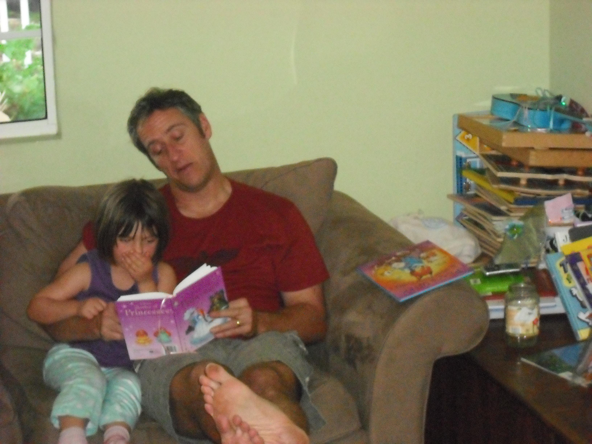

Literature has been a consistent source of comfort and refuge for me as I have grown and navigated and continue to grow and navigate an everchanging world. Back to even my earliest memories I have used words as shelters, anchors, and means of expression. While I never stuck to writing, some of the hardest times of my life have been compartmentalized in line breaks and tinted paper. Stories, poems, books, and lyrics are the lens through which I see the world. These words transformed from thoughts into tangible, visible books and letters saturate my heart and mind with so much more than I could ever give back to these art forms and the authors that create within them.
My love for books is not out of the blue. During my childhood and through the early years of middle school, some of the most memorable quality time spent with my parents was via a book we were reading together. Whether read aloud to me before bed or discussed after we both read it, me and my parents have explored universes and concepts through the lens of different storytellers together.
